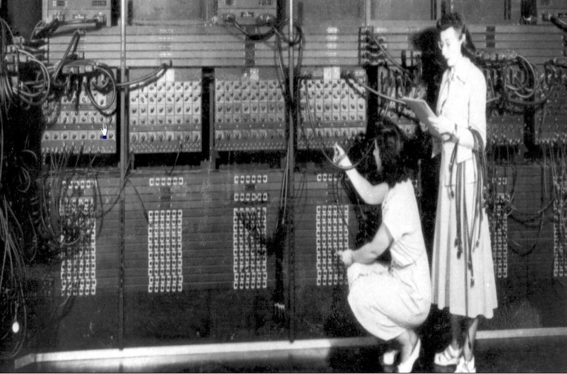

HARDWARE
¿Qué es el hardware?
En términos muy generales el cuando nos referimos a hardware nos referimos a la parte física de los ordenadores o sistemas informáticos, entre estos se encuentras los componentes internos que realizan el procesamiento de la información, el almacenamiento de la mismas, y los periféricos o dispositivos que nos permiten como usuarios el manejo de dichos dispositivos, así como los que permiten ingresar o recibir información de los mismos.
¿Mujeres programando?
Dicha frase sin contexto puede parecer misógina, pero después de conocer la historia de Betty Snyder Holberton, Jean Jennings Bartik, Kathleen McNulty Mauchly Antonelli, Marlyn Wescoff Meltzer, Ruth Lichterman Teitelbaum y Frances Bilas Spence, La única respuesta que se puede dar es: SI, mujeres programando, y es que ellas 6 se encargaban de programar un dinosaurio, un “animal” prehistórico de 27 toneladas llamado ENIAC.
Estas 6 mujeres se encargaban de conectar y desconectar miles de cables para que ese animal gigantesco pudiera realizar hasta 5000 sumas por segundo.
Aunque hay alguna controversia para definir cuál fue la primera computadora, entre la ABC Rusa, la Z1 alemana o la ENIAC Estadounidense, fue construida en la universidad de Pensilvania por John William Mauchly y John Presper Eckart, fue presentada en febrero de 1946, y su propósito inicial era el cálculo de tablas de tiro para el gobierno de EE.UU., en su diseño se basaba en más de 17 mil tubos de vacio y fue predecesora de muchos avances tecnológicos que aun utilizamos el día de hoy, por ejemplo la programación binaria, el almacenamiento de programas y otros muchos.